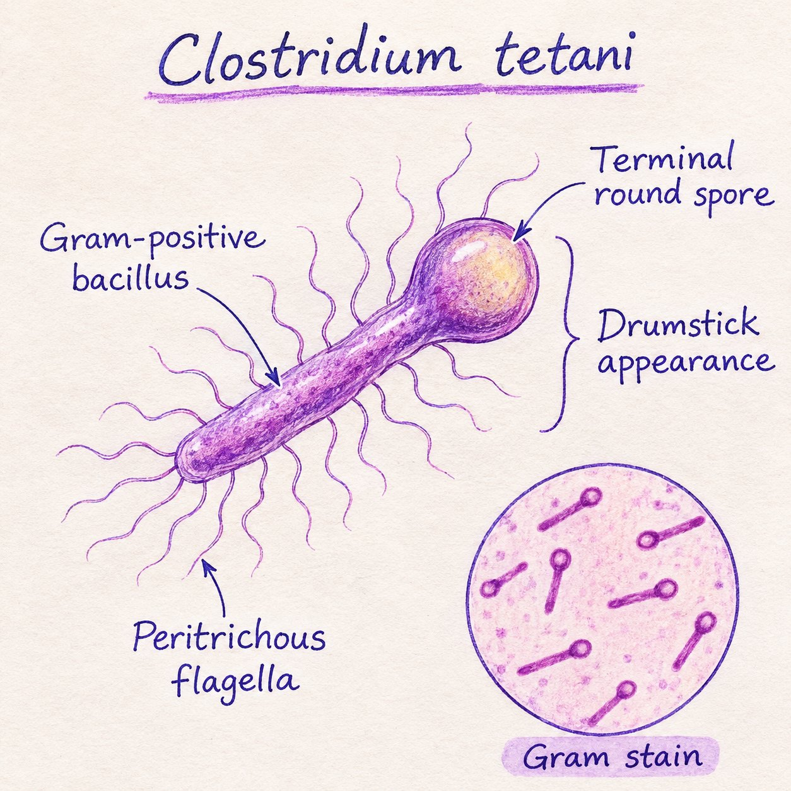
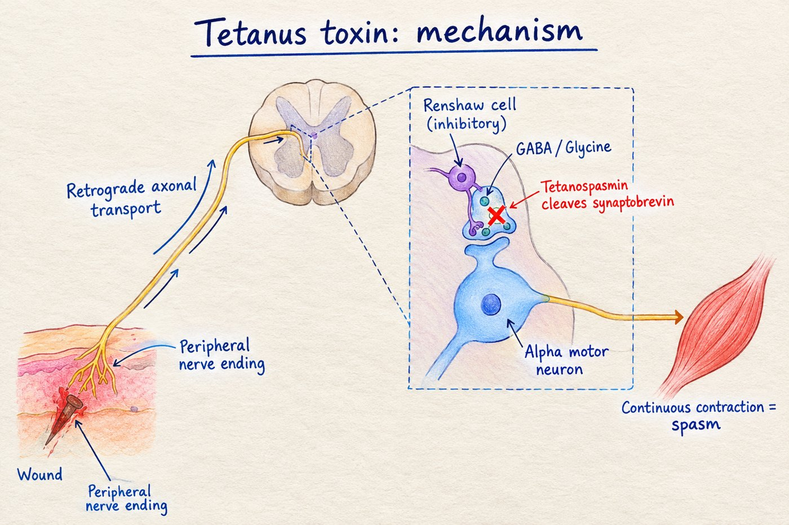
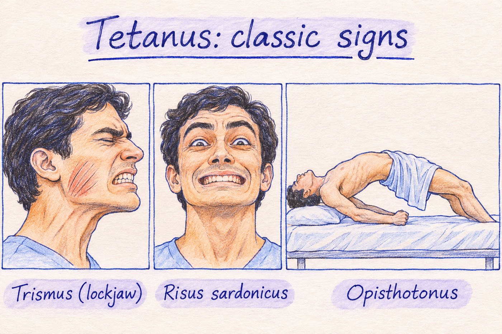

@abhigyanjainmbbs · Free notesAbhigyan Jain · MBBS student
Rusty nail से tetanus? Complete notes: for everyone + MBBS exam level
TETANUS
Not the rust. The soil.
MYTHRust (जंग) causes tetanus.
Rust has never given anyone tetanus. Iron oxide is harmless.
FACTThe cause is a soil bacterium: Clostridium tetani.
A rusty nail is just a warning sign: it has usually been lying outdoors in soil or dust, and it makes a deep, narrow, airless wound, which is exactly what the bacterium needs.
Rust is only a signal. The danger is the soil on the nail.
Tetanus in 30 seconds
- Organism: Clostridium tetani, a Gram-positive, spore-forming, obligate anaerobe (cannot grow in oxygen).
- Lives in: soil, dust and animal (especially horse) and human faeces; manure-treated soil is rich in spores.
- Enters through: any break in the skin: puncture wounds (nails, thorns, splinters), burns, crush injuries, animal bites, dirty needles/injections, even trivial scratches. In ~30% of cases no obvious wound is remembered.
- Disease is caused by its toxin (tetanospasmin), not by the bacteria spreading through the body.
- Toxin travels up nerves to the spinal cord and switches off the "brakes" of muscles → lockjaw, stiffness, painful spasms, with the patient fully conscious.
- About 1 in 10 patients die even with modern intensive care (CDC).
- Getting tetanus does NOT make you immune. Only the vaccine (tetanus toxoid) protects.
- Not contagious: it does not spread from person to person.
IF YOU ARE INJUREDWash the wound with soap and clean running water. If the wound is deep or dirty and your last tetanus shot was more than 5 years ago or you don't remember, see a doctor the same day. Everyone needs a booster every 10 years. Full steps on page 6.
Educational content only · Not medical advice · If you are injured or unwell, see a doctor.1 / 6
Tetanus notes · MicrobiologyAbhigyan Jain · MBBS student
1. The organism: Clostridium tetani

Hand-drawn revision diagram: drumstick appearance.
Morphology
- Gram-positive, slender bacillus (older cultures may stain Gram-variable).
- Round, terminal spore wider than the bacillus → "drumstick" / "tennis-racket" appearance.
- Motile with peritrichous flagella; non-capsulated.
- Obligate anaerobe.
Culture (Ananthanarayan & Paniker)
- Grows anaerobically; Robertson's cooked meat (RCM) medium is commonly used.
- Swarming growth on blood agar (motile organism).
Resistance of spores
- Survive for years in soil; resistant to drying, heat and many routine antiseptics.
- Some spores survive boiling, and even autoclaving at 121 °C for 10–15 minutes (CDC Pink Book).
- The vegetative bacterium, however, is killed by oxygen.
2. Toxins
| Toxin | Key points |
|---|
Tetanospasmin
(neurotoxin) | Causes the disease. Plasmid-encoded, heat-labile protein made of a heavy and a light chain. The light chain is a zinc-dependent metalloprotease that cleaves synaptobrevin (VAMP), stopping release of inhibitory neurotransmitters. One of the most potent toxins known: estimated minimum human lethal dose ≈ 2.5 ng/kg, i.e. about 175 ng for a 70 kg adult (CDC Pink Book). |
Tetanolysin
(haemolysin) | Oxygen-labile haemolysin; its role in disease is unclear. |
EXAM NOTEWhy can a nanogram-level dose kill, yet give no immunity? The lethal amount of toxin is far smaller than the amount needed to stimulate an antibody response, so recovery from tetanus does not give immunity. Vaccinate every patient after recovery.
Educational content only · Not medical advice2 / 6
Tetanus notes · PathogenesisAbhigyan Jain · MBBS student
3. Pathogenesis: how a small wound becomes a whole-body disease

Toxin travels backwards along the nerve and blocks the inhibitory "brakes" in the spinal cord.
- Entry: spores enter a wound with dead tissue, dirt or a foreign body (low oxygen, low redox potential).
- Germination: spores turn into vegetative bacteria, which stay local (non-invasive) and release tetanospasmin.
- Binding and transport: toxin binds to peripheral motor nerve terminals and travels by retrograde axonal transport to the spinal cord and brainstem.
- Trans-synaptic spread into inhibitory interneurons (e.g. Renshaw cells).
- Block: the light chain cleaves synaptobrevin, so GABA and glycine are not released.
- Result: motor neurons fire unopposed → rigidity and spasms; sympathetic overactivity → autonomic instability.
- Binding is irreversible: recovery needs growth of new nerve terminals, so spasms last weeks and full recovery takes months.
INCUBATIONUsually 3–21 days (average about 8 days). The farther the wound from the CNS, the longer it takes. A shorter incubation period means more severe disease and a higher death rate.
EXAM NOTESame family, opposite effect: botulinum toxin blocks acetylcholine release at the neuromuscular junction → flaccid paralysis. Tetanus toxin blocks GABA/glycine in the CNS → spastic paralysis.
Educational content only · Not medical advice3 / 6
Tetanus notes · Clinical features and diagnosisAbhigyan Jain · MBBS student
4. Clinical features

The three classic signs: trismus, risus sardonicus, opisthotonus.
Generalized tetanus (most common, about 80% of cases): a descending pattern
- Trismus (lockjaw) is often the first sign: spasm of the masseter.
- Risus sardonicus: fixed "sardonic grin" from facial muscle spasm.
- Neck stiffness, difficulty swallowing, board-like abdominal rigidity.
- Opisthotonus: back arched backwards from spasm of the back muscles.
- Generalized spasms triggered by noise, light or touch; consciousness is preserved, so they are extremely painful.
- Autonomic: fever, sweating, high blood pressure, fast heart rate, arrhythmias.
| Other forms | Features |
|---|
| Localized | Rigidity of muscles near the wound; may progress to generalized tetanus. |
| Cephalic | Head or face injury, or chronic otitis media; cranial nerve palsies (often facial). Short incubation; may generalize. |
| Neonatal | Unhealed umbilical stump, usually when the mother is unvaccinated; poor sucking, rigidity, spasms. India was validated for elimination of maternal and neonatal tetanus in 2015 (WHO), thanks to maternal Td/TT vaccination and clean deliveries. |
Complications
Laryngospasm (airway obstruction), fractures of the spine and long bones from spasms, aspiration pneumonia, autonomic storm and arrhythmias, pulmonary embolism, hospital infections, death. Case-fatality is about 10% (CDC), and higher in the elderly and the unvaccinated.
5. Diagnosis
- Clinical diagnosis: there is no confirmatory laboratory test.
- Wound culture grows C. tetani in only about 30% of cases, and it can grow from people without tetanus.
- Spatula test (bedside): touching the posterior pharynx with a spatula causes a reflex spasm of the masseters (the patient bites the spatula) instead of a gag. Reported sensitivity is about 94% and specificity about 100%.
- Differentials: strychnine poisoning, dystonic reaction (drugs), hypocalcaemic tetany, meningitis, dental abscess with trismus, rabies.
Educational content only · Not medical advice4 / 6
Tetanus notes · Treatment and preventionAbhigyan Jain · MBBS student
6. Treatment (hospital/ICU only, for doctors; for information)
- Admit to ICU in a quiet, dark room to reduce triggered spasms.
- Neutralize unbound toxin: Human tetanus immune globulin (HTIG/TIG), single IM dose. 500 IU is now recommended (CDC/ACIP) and appears as effective as the older 3,000–6,000 IU; part may be infiltrated around the wound. TIG cannot remove toxin already bound to nerves.
- Remove the source: thorough wound cleaning and surgical debridement.
- Antibiotic: metronidazole (preferred) for 7–10 days; parenteral penicillin G is an alternative.
- Control spasms: benzodiazepines (e.g. diazepam), magnesium sulfate; severe cases need neuromuscular blockade with mechanical ventilation.
- Airway: early intubation or tracheostomy in severe disease. Manage autonomic dysfunction, nutrition, DVT prophylaxis.
- Start active immunization (Td) during recovery, at a different site from TIG, because the disease gives no immunity.
7. Prevention: vaccination
The vaccine is tetanus toxoid: the toxin inactivated with formaldehyde. It is harmless but teaches the body to make antitoxin antibodies. In India, TT has been replaced by Td (tetanus + adult-dose diphtheria).
| India UIP: who | When | Vaccine |
|---|
| Infants (primary) | 6, 10, 14 weeks | Pentavalent (DPT + Hep B + Hib) |
| Children | 16–24 months; 5–6 years | DPT booster-1; DPT booster-2 |
| Adolescents | 10 years and 16 years | Td |
| Pregnant women | Early pregnancy; 4 weeks later | Td-1, Td-2 (or one Td-booster if vaccinated with 2 doses in a pregnancy within the last 3 years) |
| Adults | Every 10 years | Td booster |
Wound management: who needs vaccine or TIG? (CDC)
| Previous tetanus doses | Clean, minor wound | All other wounds
(dirty, puncture, burns, crush, bites) |
|---|
| Unknown or fewer than 3 | Td: Yes · TIG: No | Td: Yes · TIG: Yes (250 IU IM) |
| 3 or more | Td only if last dose ≥ 10 years ago · TIG: No | Td only if last dose ≥ 5 years ago · TIG: No |
People with HIV or severe immunodeficiency who have contaminated wounds should also get TIG, regardless of vaccination history. Antibiotics are not used to prevent tetanus after a wound.
Educational content only · Not medical advice · Treatment decisions are made by a doctor.5 / 6
Tetanus notes · What everyone should doAbhigyan Jain · MBBS student
8. Got hurt? Do this
1
Wash the wound with soap and clean running water for several minutes. Remove visible dirt.
2
Cover it with a clean dressing. Do not put mud, cow dung, turmeric paste, oil or ash on it.
3
Check your vaccine: when was your last tetanus (TT/Td) shot?
4
Go to a doctor the same day if the wound is deep, dirty, a puncture, a burn, a crush injury or an animal bite, and your last shot was over 5 years ago or you don't know.
5
Even for clean small cuts: get a Td booster if it has been 10 years.
Wash the actual wound with soap and running water.
EMERGENCY: GO TO A HOSPITAL NOWJaw stiffness or difficulty opening the mouth, difficulty swallowing, stiff neck, back or belly, painful muscle spasms, especially days to weeks after any wound.
9. Myths vs facts
| Myth | Fact |
|---|
| Rust causes tetanus. | Soil bacteria cause it. Rust is only a sign the object was outdoors. |
| Only nails cause tetanus. | Any wound can: thorns, burns, bites, dirty needles, even scratches. |
| One TT injection protects for life. | Protection fades. You need a booster every 10 years (sooner for dirty wounds). |
| If you survive tetanus, you are immune. | No. The disease gives no immunity; vaccinate after recovery. |
| Tetanus spreads from person to person. | No. It is not contagious. |
EXAM ONE-LINERS
Drumstick = terminal round spore · Tetanospasmin (plasmid) + tetanolysin · cleaves synaptobrevin/VAMP · blocks GABA + glycine (Renshaw cells) · retrograde axonal transport · first sign trismus · risus sardonicus, opisthotonus · consciousness preserved · spatula test · culture positive ~30% · HTIG 500 IU + metronidazole · no immunity after disease · toxoid vaccine · India MNTE 2015.
Sources: CDC Pink Book, Ch. 21 (Tetanus); CDC Clinical Overview and Clinical Care of Tetanus; CDC wound-management guidance; Ananthanarayan & Paniker's Textbook of Microbiology; MoHFW National Immunization Schedule (UIP) and Td operational guidelines; WHO (India MNTE validation, 2015).
Disclaimer: These notes are for education and awareness only and are not medical advice. They do not replace a consultation with a qualified doctor. If you are injured or unwell, please see a doctor.
More myths broken every day → @abhigyanjainmbbs
Educational content only · Not medical advice6 / 6